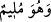
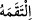
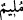
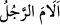
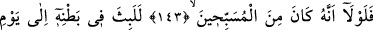
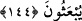
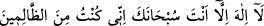

demektir. Kâşifî der ki: Hak Teâlâ denizlerin dibinde yaşayan bir balığa geminin önüne
gelmesini ve ağzını açmasını vahyetti. Keşfü’l-esrâr’da der ki: Yunus (a.s.) Yemen
tarafından gelen bir balığa tevâfuk etti. Balık Yunus (a.s.)’ı yuttu. Denizin tâ dibine
indirdi. Yunus (a.s.) denizin dibinde kumların ve çakıl taşlarının tesbihini duyuyordu.
“
” ifadesi, “
” fiilinin mef’ulünden haldir. Buna göre o
1. Kınamaya dahildir. Kınamaya dahil olmasının mânâsı, kınamayı hak etsin yahut
etmesin kınanmasıdır.
2. Kınamayı gerektiren bir iş yapandır ki bu durumda “
” başkaları onu kınasa da
kınamasa da kınanmayı hak eden demektir. Kişi kınanmayı gerektiren bir iş yapınca
veya kendini kınayınca “
” denilir.
3. Nefsini kınayan demektir. Yani, Yûnûs (a.s.) “Neden kavmimden kaçtım?” diye
kendisini kınardı.
Rivâyete göre Allah Teâlâ balığa “Ben onu sana rızık olarak göndermedim. Ancak
senin karnın onu koruyucu bir kap olacaktır. Bu emanetin bir kemiğini kırmayasın. Bir
damar ve mafsalını kesmeyesin” diye ilham etti. Yunus (a.s.) balığın karnında 40 gece
kaldı. Yunus (a.s.)’ın hasta olarak sahile atılmış olması buna delâlet eder. Kâşifî der ki:
“Altı veya yedi gün, daha meşhur olan görüşe göre kırk gün balığın karnında kaldı. O
balık yedi denizi gezdi. Hak Teâlâ Yûnus (a.s.) denizin hayret verici ve ilginç hallerini
görsün, Hak Teâlâ’yı zikir ve teşbih ile meşgul olsun diye o balığın etini ve derisini
billur gibi nâzik ve pürüzsüz kılmıştı.”
143, 144. Eğer Allah’ı tesbih edenlerden olmasaydı, tekrar dirilecekleri güne
kadar onun karnında kalırdı.
“Eğer” balığın karnında “
” yani “Sen’den başka
hiçbir tanrı yoktur. Seni tenzih ederim. Gerçekten ben zâlimlerden oldum!” diyerek
“Allah’ı tesbih edenlerden” yani ömür boyu Allah’ı tesbihle çokça zikredenlerden
yahut Sehl (rh.a.)’den rivayet edildiğine göre zikir, namaz ve diğer hususlarda bu belaya
düşmeden önce Allah’ın hukukuna riâyet edenlerden “olmasaydı” kabirlerinden
“tekrar dirilecekleri güne kadar” diri yahut ölü olarak “onun” yani balığın “karnında
kalırdı.”
Keşfü’l-esrâr’da der ki: Burada üç vecih vardır. 1. Yunus (a.s.) ve onu yutan balık
kıyamete kadar böyle kalacaklardı. 2. Balık ölecek, Yunus (a.s.) balığın karnında
kıyamete kadar kalacaktı. 3. Her ikisi de ölecek ve sonra Yunus (a.s.) balığın karnında